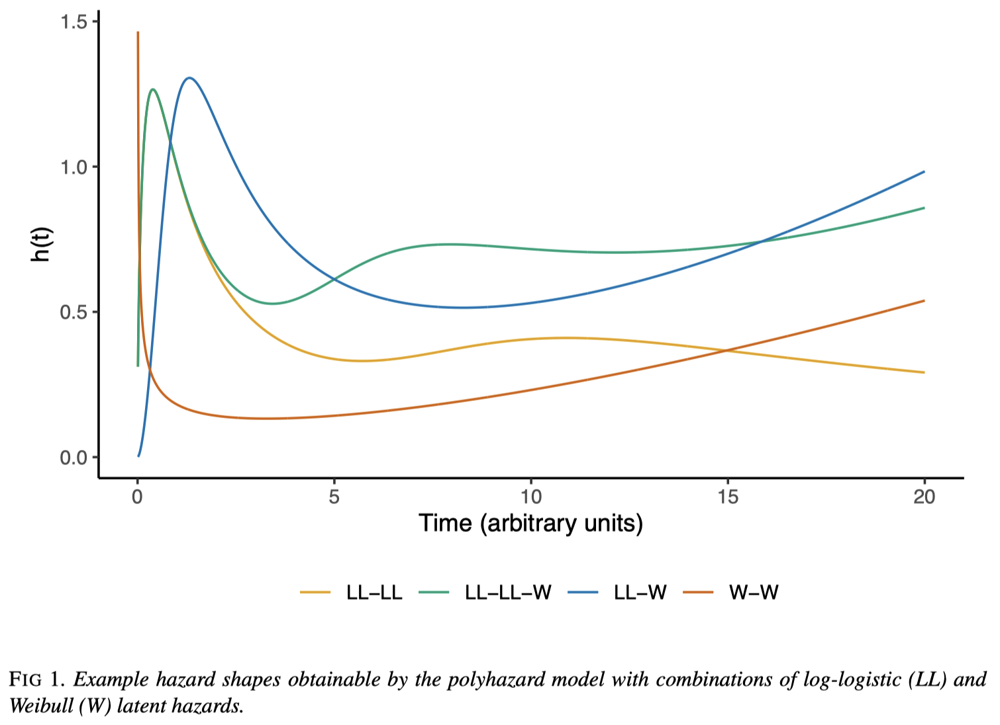

A Blog Entry on Bayesian Computation by an Applied Mathematician
$$
$$
1 生存時間解析の概要
1.1 はじめに
医療技術評価 (HTA: Health Technology Assessment) とは，新たな医療技術を臨床試験で評価し，リスクやコストを勘案して新技術の既存法との効果や安全性を評価・比較する決定理論的な枠組みである．
この枠組みでは，例えば次のような平均の計算が必要になる： \[ \operatorname{E}[Y]=\int^\infty_0S_Y(y)\,dy,\qquad S_Y(y):=\operatorname{P}[Y\ge y]. \tag{1}\]
このとき，\(Y\) は被験者のイベントまでの時間 (time-to-event) を表す確率変数で，\(S_Y\) は \(Y\) の 生存（割合）関数 といい，分布関数 \(F_Y\) と次の関係を持つ： \[ S_Y(y)=1-F_Y(y). \]
1.2 古典的生存時間解析
1.2.1 ノンパラメトリック法
生存時間解析における最大の問題は観測の 打ち切り (censoring) である．
換言すれば，ほとんどの生存時間データでは種々の理由で被験者が脱落し，追跡終了時点以降はイベントの発生を確認できないのである．
そこで，５割生存時間 (MST: Median Survival Time) を代わりに推定対象としたり，ある打ち切り時刻 \(T>0\) までの区間のみに限って \(S:[0,T]\to[0,1]\) を推定することが考えられた．
これには (Kaplan and Meier, 1958) や (Cutler and Ederer, 1958) の方法が古来より有名である．
1.2.2 セミパラメトリック法
生存時間解析の主な目的は，生存曲線の正確な描画というより，生存時間を決定する要因の特定にある．
(Cox, 1972) はベースとなる生存関数 \(S_0\) (baseline survival curve) を局外母数として，\(S\) と \(S_0\) の関係をパラメトリックにモデリングする．
より正確には，モデルはハザード関数 \[ h(y):=\frac{f(y)}{S(t)}=-\frac{d \log S(y)}{d t},\qquad f(y)=F'(y), \] に関して考察される．ただし \(f\) は \(Y\) の確率密度関数とした．この \(h\) を，ベース \(h_0\) からの比を \[ \log \frac{h(y)}{h_0(y)}=X^\top\beta+\epsilon \] としてモデリングする．
ハザード関数 \(h\) は，被験者の生存割合が \(S(y)\) である段階での，次の単位時間でのイベント発生率を表す．
ハザード関数の比がモデリングされることから，このモデルは Cox の 比例ハザードモデル (Cox’s proportional hazard model) とも呼ばれる．
この方法は，打ち切りデータへの対処も可能になることが美点である．
1.3 生存曲線推定
一方で，医療行為の社会的な影響も考える HTA の目標を達成するためには，式 (1) のような量を計算する必要がある．
そのためには，生存曲線の推定と同時に打ち切り時点以降の外挿もできるようなモデルを考える必要があるが，Kaplan-Meier 法などのノンパラメトリック法は（現状）この用途には用いることができない．
表現力が高いパラメトリックモデルをベイズ推定することが，非常に魅力的な解決策として考えられ，実際 NICE のガイドラインでも推奨されている (N. Latimer, 2011)．
その際の魅力的なモデルに polyhazard model (Berger and Sun, 1993), (Louzada-Neto, 1999) がある．
(N. R. Latimer, 2013) では現状の HTA 分析では，生存時間モデルに対してモデル検証・モデル選択が不十分であることに警鐘が鳴らされている．
polyhazard model のような階層モデルを効率的にベイズ推定・モデル平均化ができるような MCMC 法が開発されることは，このモデル検証の手続きを自動化したり，より手軽にするために非常に重要である．
1.4 Polyhazard Model
Polyhazard model もハザード関数をモデリングするが， \[ h_Y(y)=\sum_{j=1}^Kh_j(y) \] という形でモデリングし，個々の \(h_j\) にパラメトリックな仮定をおく．
仮に \(h_j\) として，位置母数 \(\mu>0\) と形状母数 \(\nu>0\) を持つ Weibull 分布 \(\mathrm{W}(\nu,\mu)\) のハザード関数 \[ h_{\mathrm{W}}(y):=\mu\nu y^{\nu-1} \] と対数ロジスティック分布 \(\mathrm{LL}(\nu,\mu)\) のハザード関数 \[ h_{\mathrm{LL}}(y):=\frac{\left(\frac{\nu}{\mu}\right)\left(\frac{y}{\mu}\right)^{\nu-1}}{1+\left(\frac{y}{\mu}\right)^\nu} \] の２つのみを考えたとしても，複数のパラメトリックモデルを足し合わせることで驚異的な表現力を達成することができる．

1.4.1 モデル詳細
位置母数 \(\mu_k\;(k\in[K])\) には更なる階層構造 \[ \log(\mu_k)=\beta_{k,0}+\sum_{j\in\left\{j\in[p]\mid\gamma_{kj}=1\right\}}x_j\beta_{k,j} \] を考える．ただし，\(\gamma_{k,j}\in2\) は共変量 \(x_j\) が \(k\in[K]\) 番目の部分モデルに参加するかどうかを決める指示変数とする．
以降，\(\theta_k=(\nu_k,\mu_k)\) も併せて，\((K,\gamma,\theta)\) を本モデルのパラメータとする．
1.4.2 モデルの解釈
polyhazard モデルでは各 \(h_k\) の前に係数がついていない点には注意が必要である．
各 \(h_k\) は実在の「ハザードメカニズム」を表しており，各被験者は同時に \(K\) 個のリスクに晒されているというモデルである．
このようなモデルを 競合リスクモデル (competing risk model) ともいう．
さらに発展的なモデルにはマルチステートモデルもある (哲雄 and 健太, 2023), (Saito and Murotani, 2024)．
2 文献紹介
(西川正子, 2008) は競合リスクモデルに焦点を当てた日本語文献である．(哲雄 and 健太, 2023), (Saito and Murotani, 2024) はマルチステートモデルも扱っている．(森満, 2016) は医学者による説明が与えられている．
本項は (Hardcastle et al., 2024) を大きく参考にした．